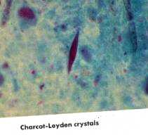

LATE PHASE OF ANAPHYLAXIS
The initial tissue response usually becomes manifest within five to 30 minutes after exposure to an allergen and tends to subside within 60 minutes. In many individuals, however, the so-called allergic reaction recurs within two to eight hours, without additional exposure to antigen, and can last for two to three days. This "late phase reaction" is characterized by a more intense infiltration of the tissues, particularly with eosinophils, and also with neutrophils, monocytes, and basophils, as well as tissue destruction in the form of mucosal epithelial cell damage. It is believed that the late phase inflammatory response is mediated largely by factors that are bound to the proteoglycan matrix of mast cells and are released slowly from the granule matrix. These factors include low- and high-molecular-weight "inflammatory factors of anaphylaxis" (IF-A), which are strongly chemotactic for neutrophils and eosinophils, and neutral proteases such as chymase and tryptase, characterized above, which can cleave complement components to generate additional inflammatory and chemotactic factors. The accumulated neutrophils and monocytes also produce distinct "basophil degranulating factors" and the lipid-derived mediators listed earlier, thereby setting up a visious circle of congestion, edema, inflammation, and mucus production. It should be evident that, unlike the early reactions, the late phase responses are not inhibited by antihistaminic drugs, but glucocorticoids are effective because of their broad-spectrum anti-inflammatory effect. The late phase can occur separately, without any obvious manifestations of early one. Mast cells are of minor significance for it, judging upon the absence of their marker PgD2 in late phase exsudate.
By far, the main ace of late anaphylaxis is eosinophil. The most essential humoral autocoid signals in late phase onset are tryptase, chymase, cytokines and PAF.
The eosinophils are, first of all, regulators of anaphylactic reaction. Their control functions are manifested most brightly during late phase of anaphylaxis. The eosinophils, attracted into the foci of inflammation by chemotactic factors mentioned above (especially, by eotaxin of epitheliocytic origin), can engulf secretory granules, produced by basophils and mastocytes.

They neutralize histamine by their histaminase and decrease the intensity of acute inflammation. Some eosinophilic products (perhaps, Pg E1 or Pg E2) inhibit mast cell and tissue basophil degranulation. Eosinophilic phospholipases B and D destroy PAF. Charcot-Leyden’s crystals, typical for sputum in bronchial asthma, consist entirely of lysophospholipase, liberated from destroyed eosinophils. Arylsulfatase of eosinophils, as well as their peroxydase and H2O2, are able to inactivate leukotrienes. The eosinophils contain antitrypsin and other antiproteases.It makes them very important down-regulators of anaphylactic inflammation. Clinical significance of this fact is demonstrated by the presence of eosinophilia before and eosinopenia – immediately after attacks of many paroxysmal anaphylactic diseases (A.B. Kay, 1983). Not only eosinophilic autocoids, but also heparin and chondroitin sulfates, secreted by mast cells and basophils, render some anti-inflammation effects and contribute into subside of anaphylactic inflammation. They inhibit the proteolytic cascades, bind histamine, and decrease exudation, facilitating reparation. The glucocorticoids and their tissue messenger lipomodulin partially mediate their anti-inflammation effects via utilization of some eosinophilic cell subsets in tissues. Due to homing of eosinophils and their utilization, glucocorticoid level and amount of eosinophils in circulating blood are related inversely. This relationship is adopted for clinical Thorn’s test, previously used for rough evaluation of adrenal cortex function by blood eosinophil count.
At the same time, eosinophils should not be regarded as purely anti-inflammation regulators. They are heterogeneous. Some subsets of eosinophils, for sure, are specialized in late anaphylaxis on opposite, promoting functions. Earlier, in our discussion of anti-parasites immunity we have already concerned the exclusive role of eosinophils in resistance against helminthes. Besides eosinophilic major basic protein (EBP) and eosinophilic cationic protein (ECP), directly cytotoxic for worms and their larvae, eosinophils produce cyanide-resistant peroxidase, killing the helminthes. Virtually, eosinophils are main K-cells of anti-parasitic immunity. The central part of this function is played by large granular eosinophils with decreased density of cytoplasm. Probably, these are specialized cytotoxic eosinophils (SCE). Their number in normal healthy individuals is minimal. But this particular subset of eosinophilic cells gets expansion both in anaphylaxis and in helminthiases. SCE are activated and promoted to proliferation by IgE, GM-CSF, IL-3 and IL-5. They excrete large amounts of EBP, ECP and PAF, express reagin receptors and contribute into antibody-dependent anti-worm toxicity. PAF recruits all other cells of inflammation, and ECP/EBP are highly toxic for self-epithelial cells, causing apoptosis of bronchial epithelium and epidermis, which may aggravate the course of bronchial asthma and atopic dermatitis.
So, low-density eosinophils are the main cytotoxic effectors of late anaphylaxis. Late phase of the anaphylactic reaction is decisive for the outcome of the whole process, because it may subside or be prolonged. The alternative course depends on balance of pro-inflammatory and anti-inflammatory signals of different eosinophilic cell subsets. Recently it has been shown that epithelial cells and endothelium, under the influence of TNFa , acquire (especially, in some individuals) the ability to secrete special chemoattractant of eosinophils called eotaxin. The eotaxin attracts and, probably, activates cytotoxic eosinophils in foci of late anaphylactic reactions. The action of eotaxin is very important in pathogenesis of prolonged anaphylactic attacks, for example, in bronchial asthma.
NEXT CHAPTER
OR